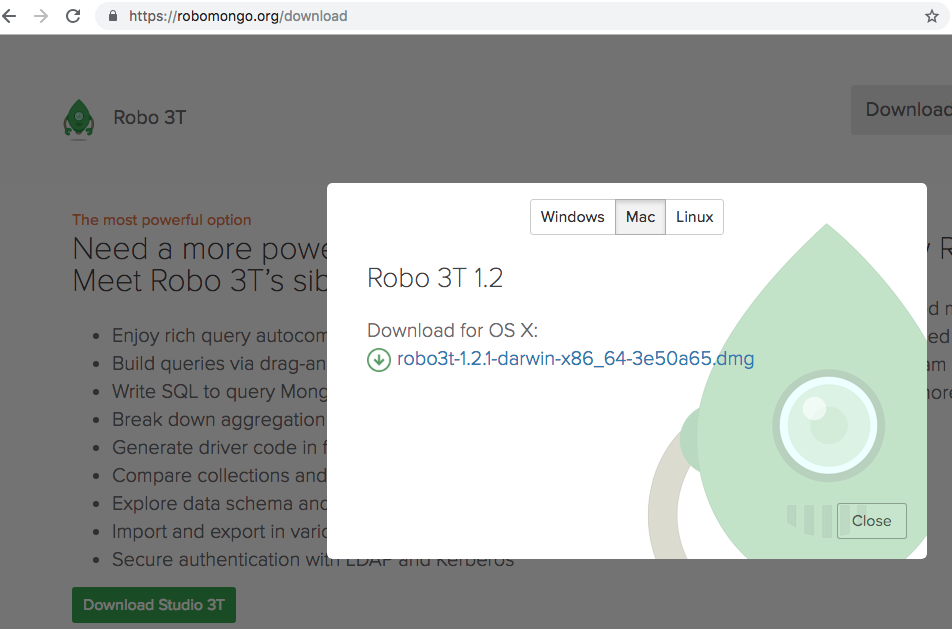
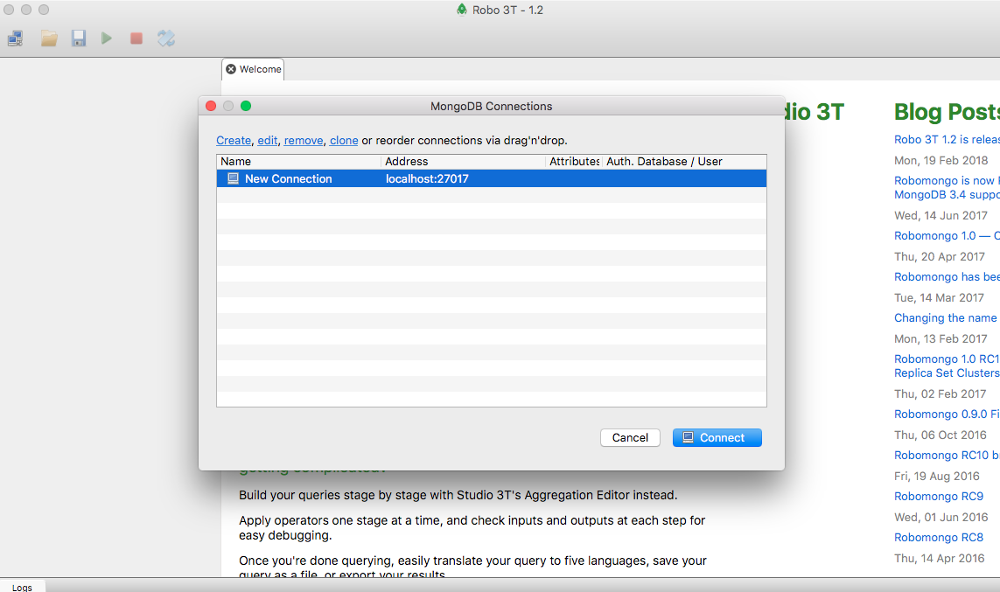
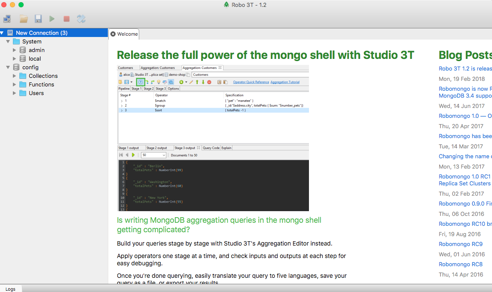

Pendahuluan
Install node.js
- Untuk install angular kita membutuhkan node.js dan NPM https://cli.angular.io/
- Install node.js terlebih dahulu https://nodejs.org/en/
- Sesuaikan dengan Sistem Operasi kalian windows, mac, linux
- Download dan Pilih yang Latest Feature
- Jika sudah terinstall maka buka cmd atau command promt ketik
node – version - Jika NPM sudah terinstall cek dengan command promt
npm -v
Install MongoDB
- install mongoDB https://www.mongodb.com/download-center/community login terlebih dahulu
- untuk cara install mongodb
- untuk mencoba mongodb
- buka terminal ketik mongod pastikan selalu on jika ingin menggunakan mongo
- buka terminal lagi ketik mongo
- ketik perintah seperti db show dbs
- install Robo3T native mongoDB management tools cat:pastikan mongod tetap jalan agar dapat langsung terkoneksi saat Robo3T dijalankan seperti pada gambar   
Install VsCode
- tambahkan beberapa extension agar memudahkan proses pembuatan code pada vscode
- angular support,
- angular files,
- angular 7 snippsets
- angular language service
Install Angular
- Untuk menginstall angular ketik code berikut pada command promt (menggunakan angular versi 7.2.2)
npm i -g @angular/cli@latest - Untuk mengecek apakah angular sudah terinstall ketik kode berikut
ng --version